Every result the package returns draws itself. plot(x)
needs nothing but the object; the chart is the one that result calls
for, drawn with base graphics (no new dependency), with one shared look
across the package. Every method takes the same customisation, and every
method returns the numbers it drew, so a figure can be checked or
redrawn another way.
One call per result
Stock and flow after Lakner (1976): the average daily population and the length of stay, one panel per measure.
sf <- stkflow(days = c(13500, 14600, 15100, 14200), people = c(300, 320, 310, 290),
prd = 2020:2023)
plot(sf)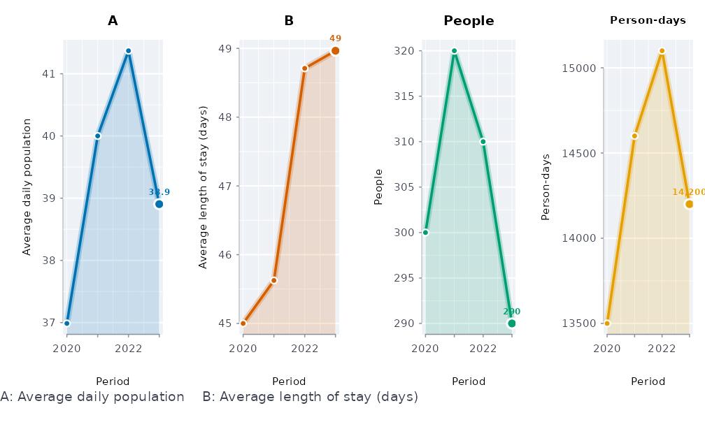
Period-over-period change with its interval, coloured by verdict:
y <- yoy(data.frame(year = 2018:2023, n = c(40, 44, 41, 55, 52, 61)), value = "n",
prd = "year")
plot(y)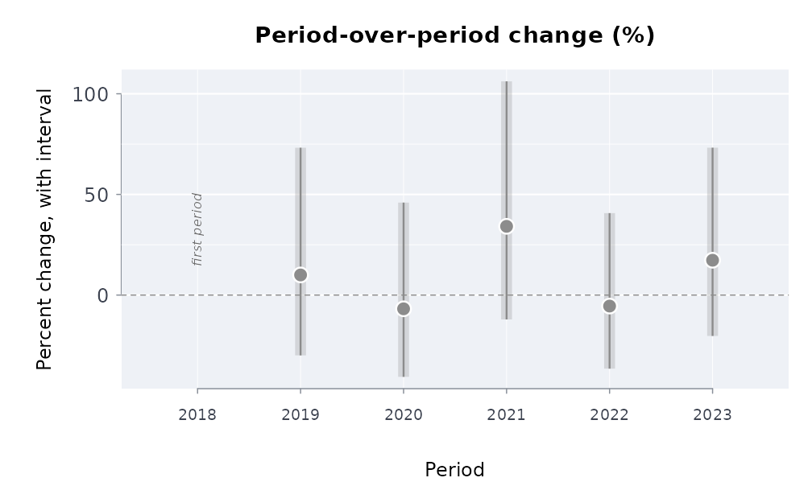
Small counts get their percentages too: each comes with its exact interval, as wide as the base is small. Only a zero base has no percentage, and its row says so.
plot(yoy(data.frame(year = 2019:2023, n = c(10, 12, 11, 15, 14)), value = "n", prd = "year"))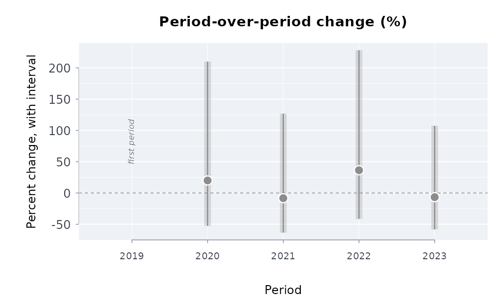
Rates with their intervals, and the change in a rate:
d <- data.frame(division = rep(c("north", "east", "west"), 2), year = rep(2022:2023, each = 3),
stops = c(120, 90, 60, 150, 85, 70), residents = c(1e4, 8e3, 5e3, 1e4, 8e3, 5e3))
plot(rtcalc(d[d$year == 2023, ], count = "stops", pop = "residents", by = "division"))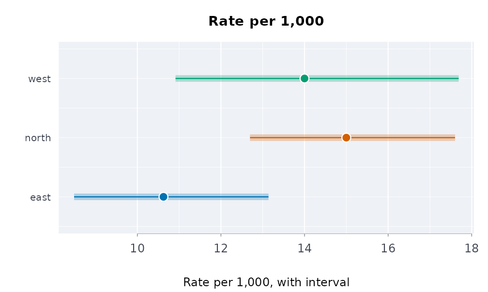

First digits against Benford’s law, the power curve of a check, and a permutation null:
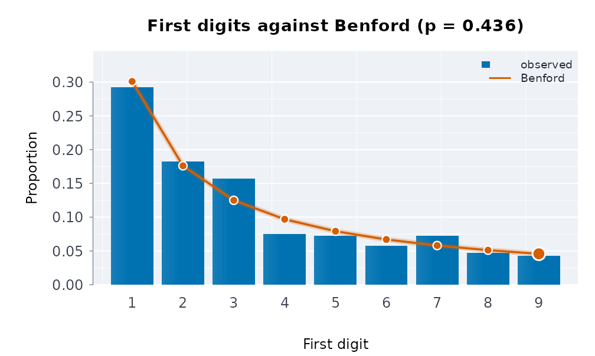
dd <- data.frame(x = rnorm(120), y = rnorm(120))
shift <- function(z, s) {
z$y <- z$y + s * z$x
z
}
plot(cpspwr(dd, function(z) cor(z$x, z$y), inject = shift, trt = "x",
sizes = c(0, 0.2, 0.4, 0.6), n = 49, reps = 6, seed = 1))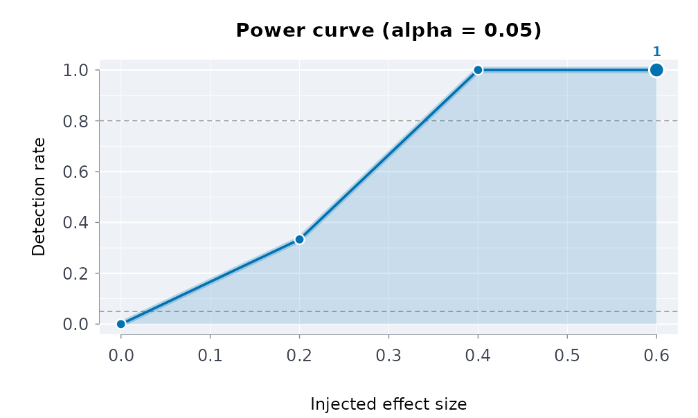
Air pollution
The concentration-response curve with the exposure marked, the burden
it implies, and the whole vrfpol() report on one page
(curve, burden and the concentration curve of exposure over income):
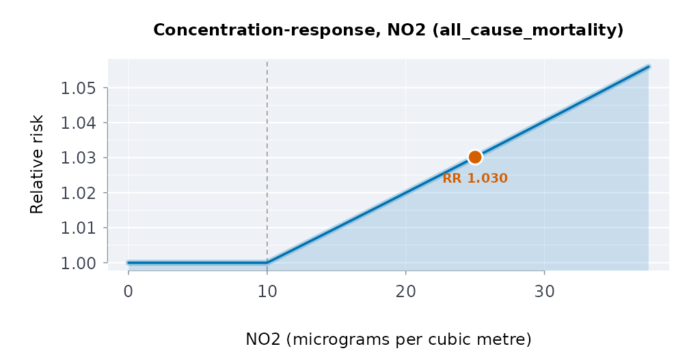
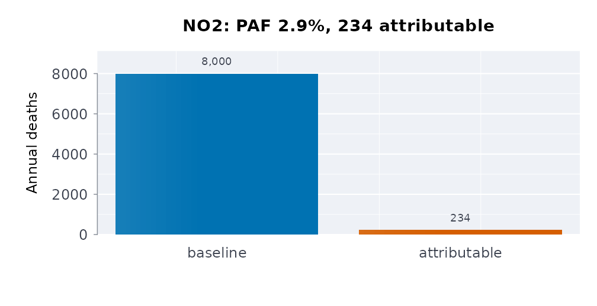

A plume on a grid, and the particle cloud of the random walk:

plot(lagrprt(500, 0, 0, u = 2, v = 0.5, kx = 1, ky = 1, dt = 1, nsteps = 60,
grid = c(0, 200, -60, 100, 40, 32)))
The footprint of a computation: CPU, memory and the total in one unit chosen to fit, with its everyday equivalents under the bars:
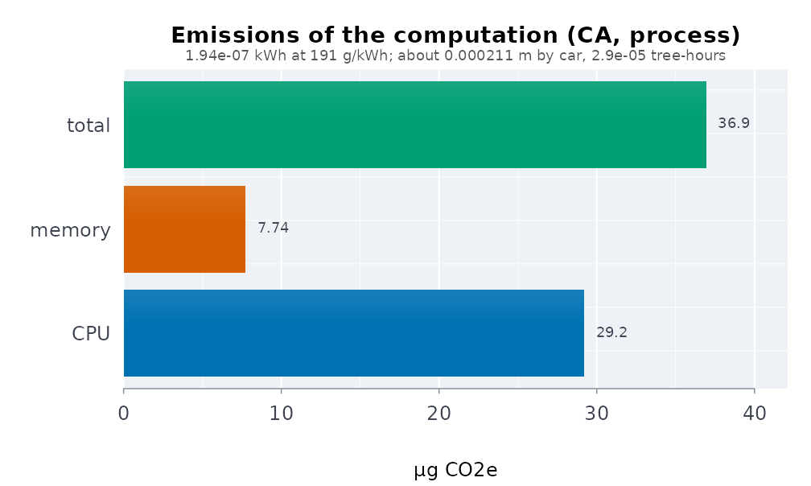
Courts and crime
The Ontario Court of Justice and Toronto Police Service data shipped
with the package (see vignette("courts-and-crime") for the
analysis behind each one):
ext <- function(f) read.csv(system.file("extdata", f, package = "rmoriebricklayer"))
f <- ext("ocj_flow_ontario.csv")
d <- ext("ocj_time_to_disposition.csv")
x <- ext("ocj_dispositions.csv")
g <- ext("ocj_offence_groups.csv")
g <- g[g$year %in% c(2014, 2022), ]
b <- ext("tps_break_enter_d14_2024.csv")
b <- b[!is.na(b$lon), ]Cases received and disposed, and the clearance rate:
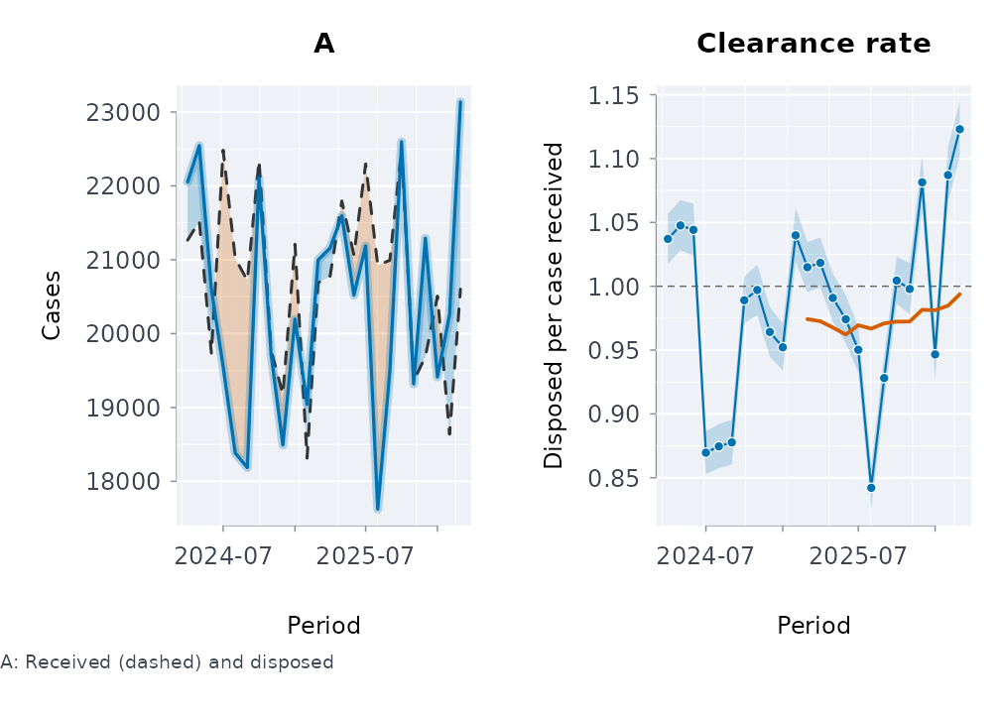
How long cases stay open, from the published time-to-disposition bands:
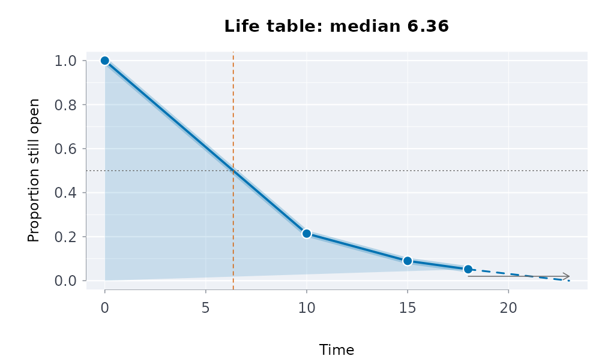
The mix of outcomes over the years:
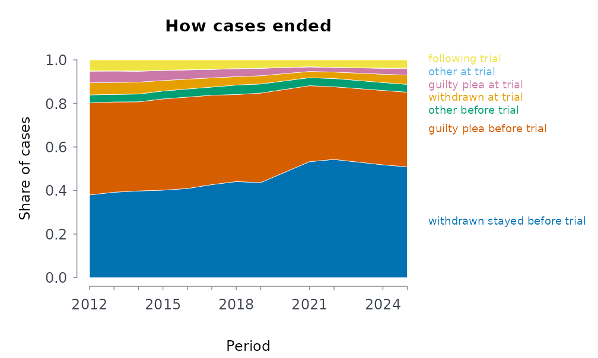
A Simpson’s-paradox check: the parts’ rates, where the work moved, and the change split into rate and mix effects:

Where break-and-enters cluster, and whether they repeat near each other soon after:

plot(knoxtst(b$lon, b$lat, as.Date(b$occ_date), c(100, 200, 400), c(7, 14, 28),
nsim = 99, seed = 1))
First Nations, Metis and Inuit health
Published Statistics Canada estimates bundled with the package
(?indiex; see
vignette("first-nations-metis-inuit-health") for the
methods and the governance behind them). Each group is drawn on its own:
the plots never pool First Nations, Metis and Inuit.
h <- indiex("health")
adults <- h[h$age == "Total, 18 years and over", ]
mh <- adults[adults$period == "2019/2022" & adults$indicator == "Perceived mental health, very good or excellent", ]Each group against non-Indigenous adults, with intervals from the published ones:
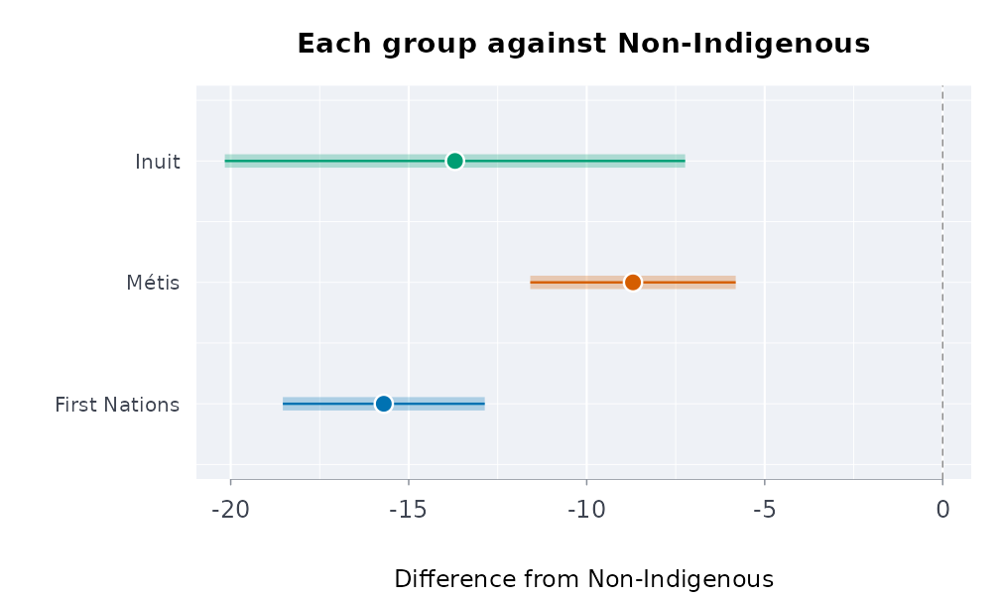
Perceived mental health on its whole scale (2022 Indigenous Peoples Survey):
r <- indiex("mentalhealth")
r <- r[r$region == "Canada", ]
plot(ordcmp(r, "group", "rating", "estimate", "lower", "upper",
lvls = c("Fair or poor", "Good", "Very good", "Excellent"),
ref = "M\u00e9tis", qual = "quality"))
Wellness beside distress, and the two as separate axes (2024 well-being table):
wb <- indiex("wellbeing")
w <- welprof(wb, "group", "indicator", "estimate", "lower", "upper",
well = c("Always or often has a hopeful outlook",
"Sense of meaning and purpose rating of 8, 9 or 10"),
distress = c("Rarely or never has a hopeful outlook",
"Life satisfaction rating between 0 and 5"),
qual = "quality")
plot(w)
plot(dualcont(w, "Always or often has a hopeful outlook", "Life satisfaction rating between 0 and 5"))
Change between the two survey periods, wellness first:
hc <- healchg(adults[adults$indicator %in% c("Perceived mental health, very good or excellent",
"Mood disorder"), ],
"group", "indicator", "period", "estimate", "lower", "upper",
from = "2015/2018", to = "2019/2022", qual = "quality",
well = "Perceived mental health, very good or excellent")
plot(hc)
The Truth and Reconciliation Commission’s Calls to Action, completed and projected:
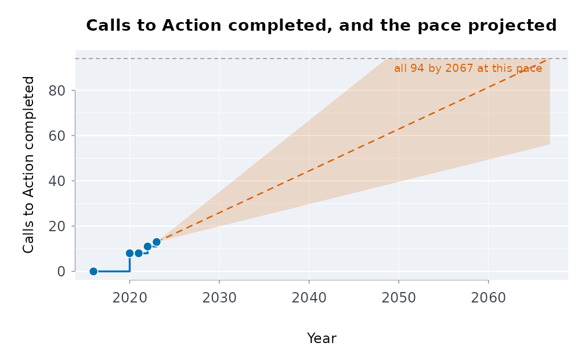
Evaluating a policy
The designs of vignette("policy-evaluation"), on its
made-up panel of twenty districts where a reform arrives in three
stages: the outcome by adoption cohort before any model, the event
study, the Goodman-Bacon weights behind a two-way fixed-effects
estimate, and the randomisation null of the assignment.
p <- polex()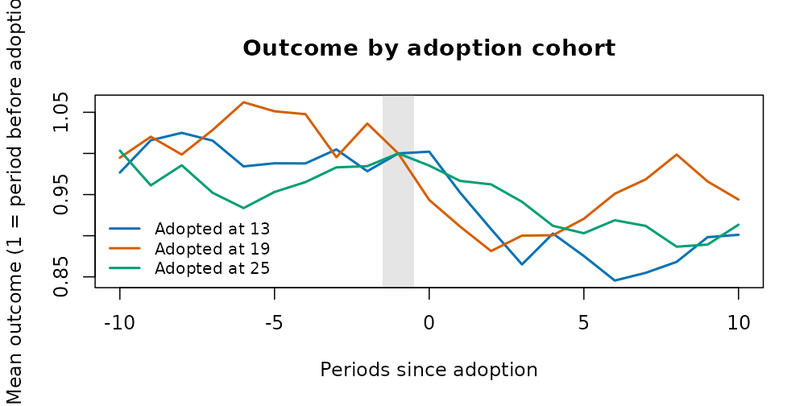


Whether one district drives the estimate, and a single treated place against its synthetic control and its synthetic difference in differences:
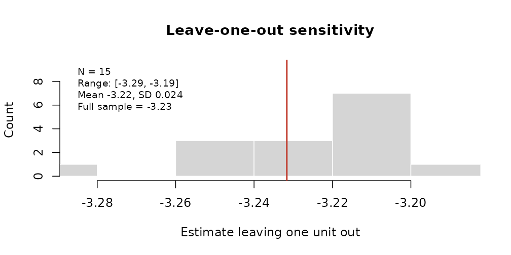
p13 <- p[is.na(p$refmonth) | p$district == "D13", ]
plot(synctl(p13, "district", "month", "crmrate", "D13", adopt = 13))
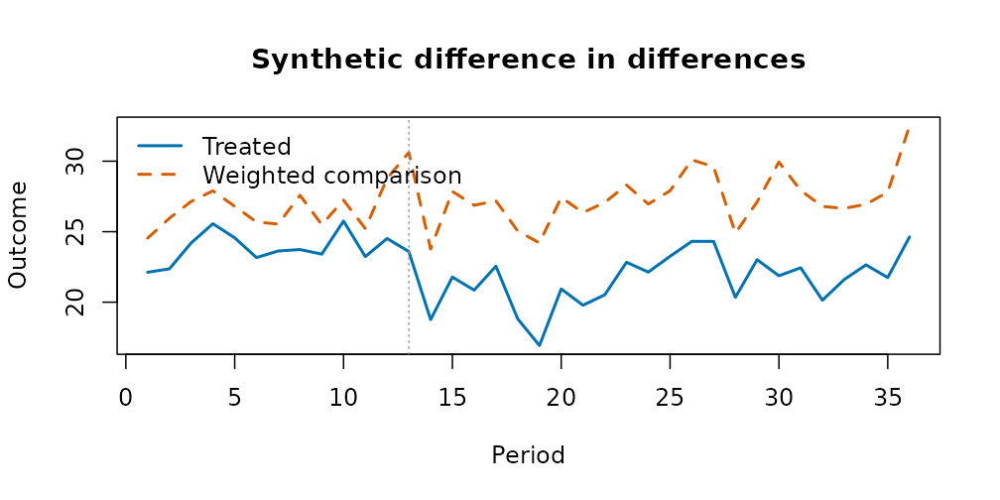
The power of the design on the untreated data, and the cross-fitted
AIPW estimate of vignette("causal-effects") with its
overlap and balance checks:
plot(plnpwr(p[p$month <= 12, ], "district", "month", "crmrate", ntrt = 10, adopt = 7:10,
eff = c(0, 0.5, 1, 1.5), reps = 40, seed = 1))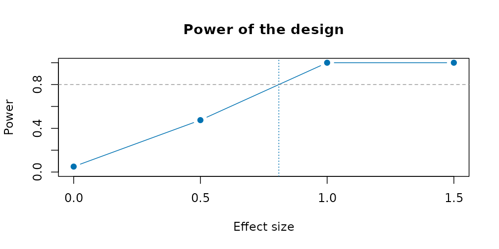
set.seed(7)
n <- 600
d <- data.frame(age = runif(n, 18, 70), income = rnorm(n))
d$t <- rbinom(n, 1, plogis(-2 + 0.04 * d$age + 0.5 * d$income))
d$y <- 10 + 3 * d$t + 0.2 * d$age + d$income + rnorm(n)
fit <- aipwcf(d, "y", "t", c("age", "income"), lrn = "ols")
plot(fit)
plot(fit, type = "estimate")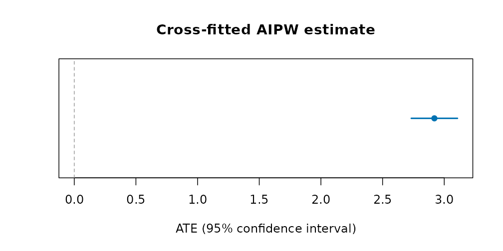
e <- pmin(pmax(attr(fit, "propensity")$propensity, 0.01), 0.99)
d$ipw <- ifelse(d$t == 1, 1 / e, 1 / (1 - e))
plot(baltab(d, "t", c("age", "income")), after = baltab(d, "t", c("age", "income"), w = "ipw"))
Customising
Every method takes main, col (or a
palette name), grid, and ... for
the base-graphics call. plotopt() sets the session
defaults; blpal() gives the colour-blind-safe sets the
package uses.
plot(sf, what = "alos", col = "firebrick", main = "Length of stay (days)", lwd = 3)
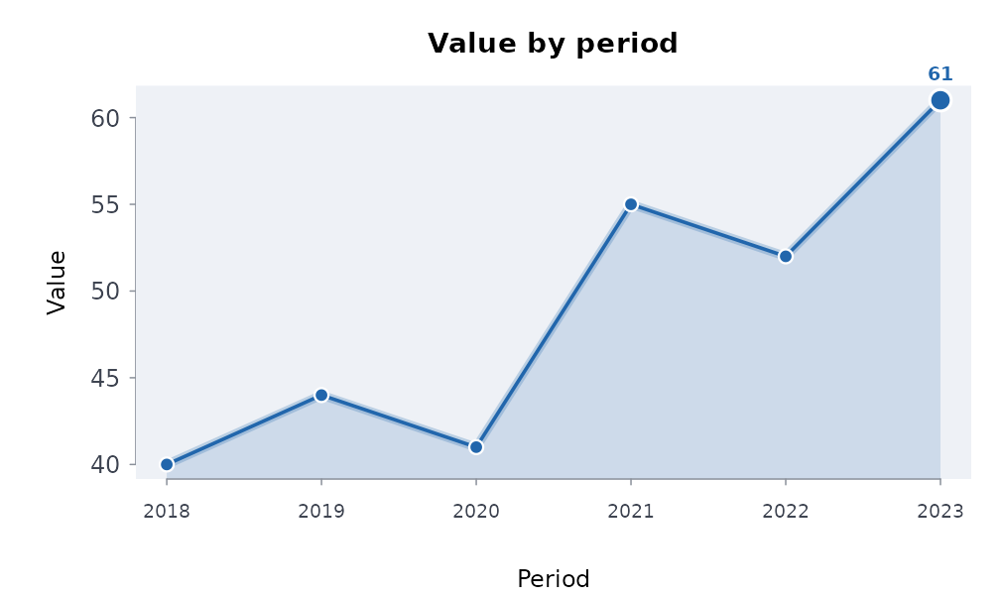
plotopt(palette = old$palette, grid = old$grid)
blpal("okabe", 4)
#> [1] "#0072B2" "#D55E00" "#009E73" "#E69F00"Every method returns the data it drew, invisibly:
drawn <- plot(y)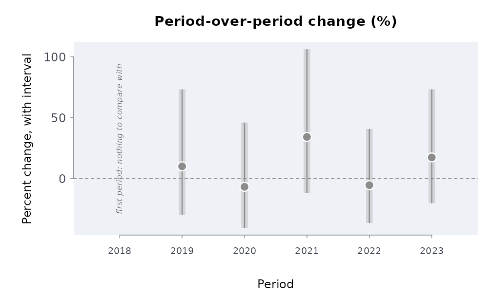
head(drawn, 3)
#> label pctchg lower upper verdict at
#> 1 2018 NA NA NA <NA> 2018
#> 2 2019 10.000000 -29.95683 73.20735 up 2019
#> 3 2020 -6.818182 -40.61975 45.94265 down 2020Results that are plain data frames have a plot function of their own: the Lorenz curve of a vector, and the funnel plot of observed against expected counts per area.
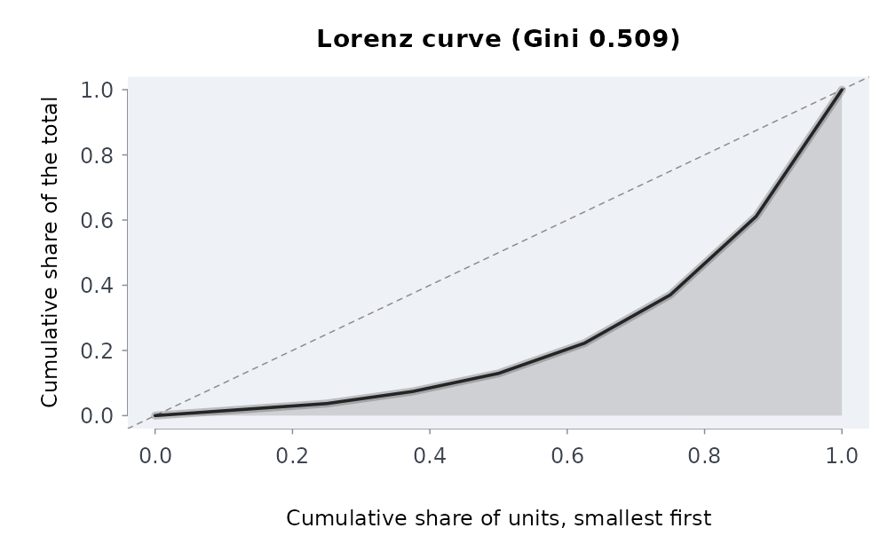
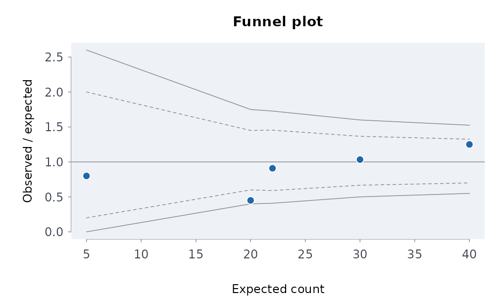